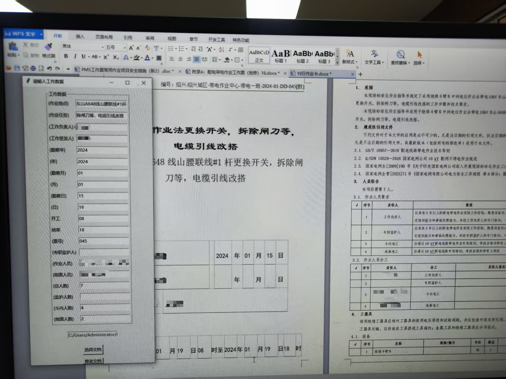
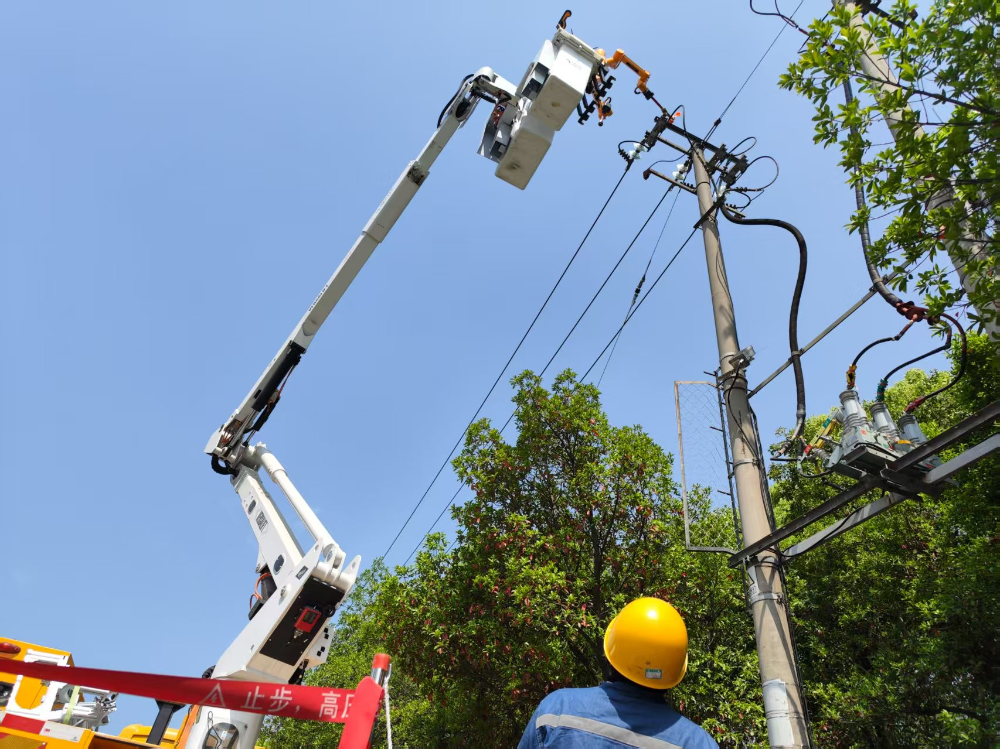
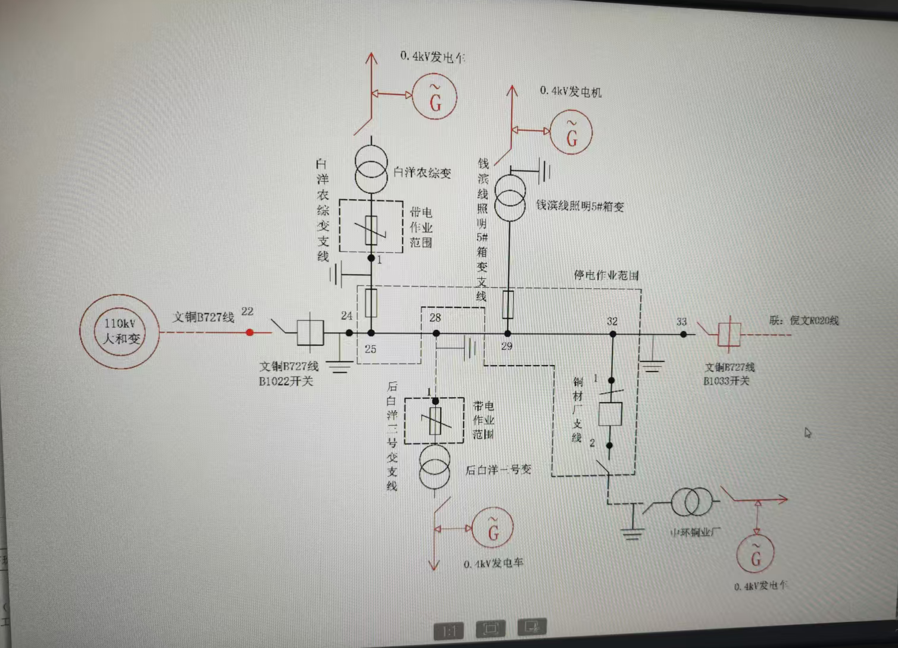
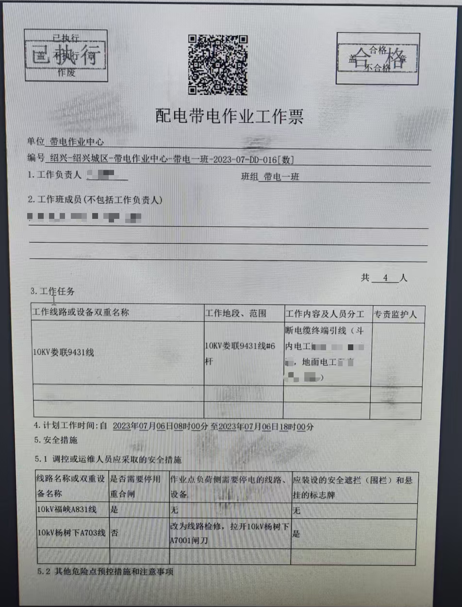
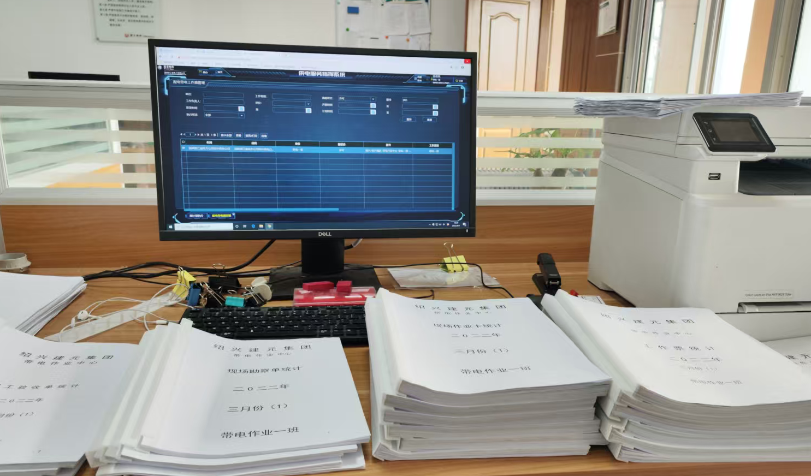

工作票体系：关键节点管控
- 票面类型包括：勘察单、基础票面、作业计划、工程提交单。高风险作业额外增加人员管控、车辆管控、三措一案等风险措施。
- 流程优化：重新规划编写流程，按区块拆分、统一编写单区块项目，使记忆锚点更清晰，工作票错误率降低30%。
- 通过 Python 调用 Word 文本库，实现重复内容一次编写、多次复用，减少手动录入带来的差错。
这一页是我的工作内容与具体流程的结构化展示，用来快速了解和定位我的能力结构。
负责中压带电作业工程的落地与执行，涵盖从计划到归档的完整链条。
这一板块集中展示我的执行能力：如何依据工作票推进现场作业、如何处理关键节点、以及如何让每个步骤都可核对、可复盘。


这一板块体现我的复盘习惯与持续改进意识：不仅完成任务，也把经验转化为可复用知识，提升后续协作效率。


